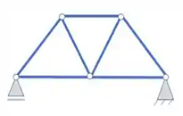
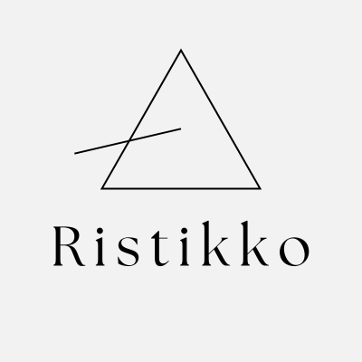
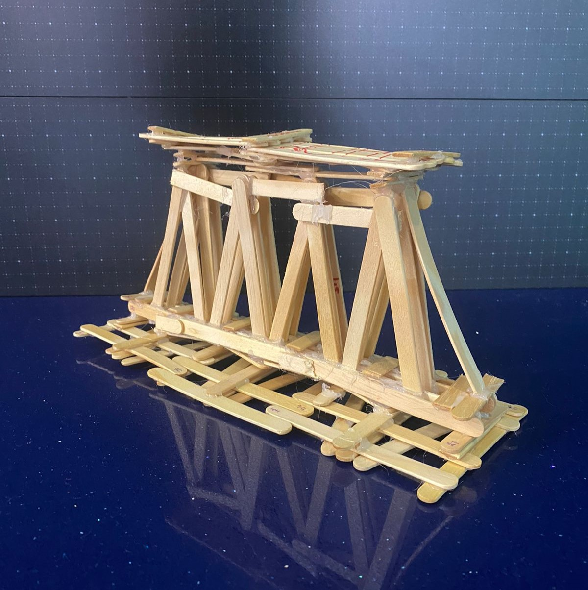

Ristikko
Sobre as Pontes treliçadas
Treliças são um importante tipo de estrutura, caracterizada por um sistema triangulado. Elas são estruturas fortes formadas por barras rígidas, conectadas nos pontos que são chamados de nós. A geometria permite calcular a distribuição das forças e otimizar a estrutura, podendo assim maximizar a resistência e minimizar o uso de materiais. As treliças são utilizadas na construção de pontes, prédios, torres e outras estruturas
A escolha do triângulo como base para as treliças se deve à sua rigidez, estabilidade e facilidade de análise. Um quadrado pode facilmente ser deformado em um losango, mas o triangulo sempre mantem sua forma original. As pontes sofrem forças externas, como o peso próprio, o peso de automóveis e pedestres, e forças internas, como a compressão, que comprime a estrutura da ponte, a tração, que estica a estrutura, a flexão, que curva a estrutura, o cisalhamento, que corta a estrutura, e a torção, que gira a estrutura. Cada força varia dependendo do tipo de monte, do material e do uso.
Sobre a Ristikko
Nossa empresa se destaca na construção, restauração, reforço e manutenção de pontes, viadutos e passarelas no modelo treliçado. Oferecemos soluções completas para suas obras, desde a elaboração do projeto até a execução final. Se você precisa de uma empresa especializada em pontes treliçadas, a Ristikko é uma ótima opção.
Nossos Serviços
Nosso principal modelo de ponte é a Ponte Capriata, que pode se adaptar facilmentea sua aplicação, podendo variar os materiais conforme a necessidade do nosso consumidor.
Nossa Localização
Você pode encontrar a Ristikko na R. Venâncio Aires, 300 - Centro, Santa Cruz do Sul - RS. Esperamos por você!